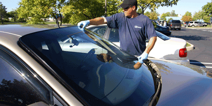

Convenient Mobile Auto Glass Replacement and Windshield Replacement Services in Los Feliz, California When it comes to auto glass replacement and windshield replacement services in Los Feliz, California, our company stands out as a trusted provider with over 10 years of experience. We offer free mobile service, ensuring that our fully equipped units come directly to your location. Our commitment to quality and safety, along with our wide range of premium glass options, make us the go-to choice for all your auto glass needs in Los Feliz, California. Mobile Auto Glass Replacement Services in Los Feliz, California We understand the inconvenience and potential safety hazards that arise from damaged auto glass. That's why we offer free mobile auto glass replacement services in Los Feliz, California. Our expert technicians will promptly arrive at your desired location, equipped with all the necessary tools and materials to perform the replacement efficiently. Whether you require a windshield replacement or any other auto glass replacement, we ensure a seamless and hassle-free experience. Windshield Replacement in Los Feliz, California Your windshield plays a crucial role in maintaining the structural integrity of your vehicle. In Los Feliz, California, we specialize in windshield replacement services, providing safety laminated windshields and windows. These laminated windshields are designed to offer enhanced protection, preventing the glass from shattering upon impact. Our windshield replacements meet or exceed safety standards, ensuring the utmost safety for you and your passengers. Mobile Car Glass Replacement in Los Feliz, California At our company, we offer mobile car glass replacement services throughout Los Feliz, California. Whether you have a cracked side window or a shattered rear windshield, our mobile units will come equipped to handle the job. Our technicians are experienced in working with tempered glass windows and windshields, guaranteeing a precise and secure installation. With our commitment to using premium quality glass and windows, you can trust us to restore your vehicle's appearance and functionality. Auto Glass Replacement in Los Feliz, California In addition to windshield and car glass replacements, we also provide comprehensive auto glass replacement services in Los Feliz, California. Our extensive inventory includes OEM equivalents, ensuring that the glass we install matches the original specifications of your vehicle. By adhering to these standards, we can deliver top-notch results that seamlessly integrate with your car's design. Premium Quality Glass and Windows We understand that compromised auto glass can compromise your safety and the overall aesthetic appeal of your vehicle. To address these concerns, we offer premium quality glass and windows that are built to last. Our products are sourced from reputable manufacturers and undergo rigorous quality checks to ensure their durability and optical clarity. With our selection, you can be confident that your new auto glass will provide excellent visibility and protection against the elements. Enhanced Safety Features In keeping with the latest automotive advancements, we also offer specialized windshields that feature advanced safety technologies. Our inventory includes rain-sensing windshields, which automatically adjust wiper speed in response to rainfall, providing optimal visibility. Additionally, we provide windshields compatible with Lane Departure Warning Systems and Collision Alert Systems, enhancing your overall safety on the road. When it comes to mobile auto glass replacement and windshield replacement services in Los Feliz, California, our company is your trusted partner. With over a decade of experience, we bring expertise, convenience, and quality to every job we undertake. Our fully equipped mobile units, commitment to safety standards, and premium quality glass options set us apart from the competition. Contact us today for all your auto glass replacement needs in Los Feliz, California, and experience our exceptional service firsthand.
Give us a call — we're happy to answer any questions.
Call Now · (818) 748-8784